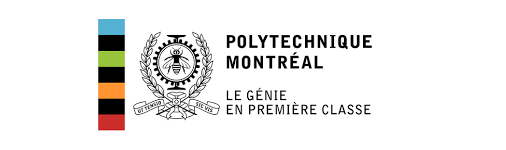
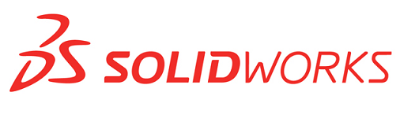
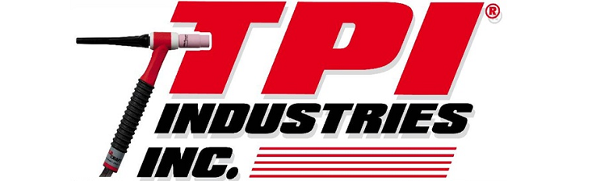
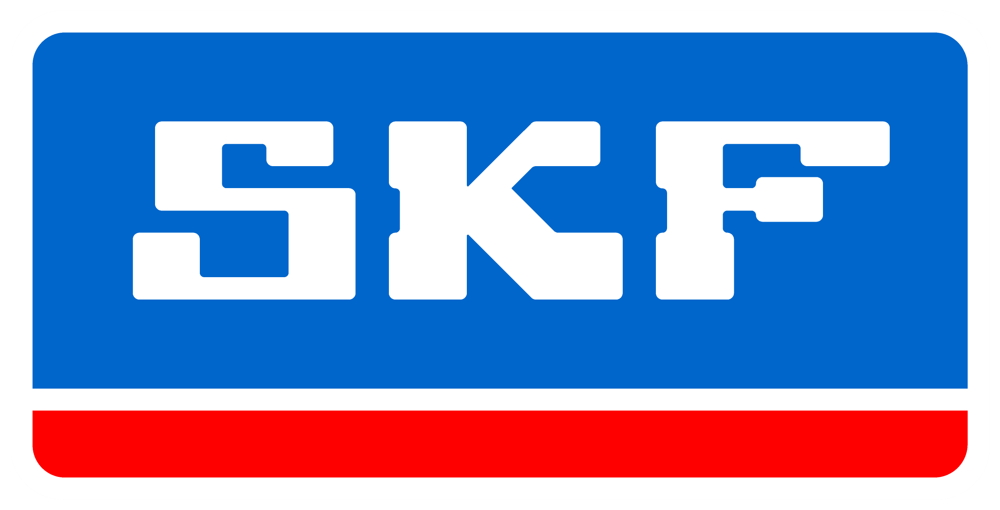

|
Francis Beauchamp Directeur général 4e année d'implication |
Raphaël Montpetit Gestionnaire de la fabrication 3e année d'implication |
|
Julien Dionne Conseiller développement et innovation 5e année d'implication |
Éolie Maurice Responsable trésorerie et commandites 3e année d'implication |
|
Éric-Aimé Izère Chassis 2e année d'implication |
Francis Beauchamp Propulsion 4e année d'implication |
Valentine Zeni Suspension/Direction 3e année d'implication |
|
Rose-Élizabeth Banville Pédalier 5e année d'implication |
Kassandra Bouchard Carosserries/Banc 3e année d'implication |
Camille Papillon-Hogue Instrumentation 3e année d'implication |
|
Thomas Laferrière Web 2e année d'implication |
|
Jean-Loup Dompierre 5e année d'implication |
David Levasseur 4e année d'implication |
Victor Fillon 3e année d'implication |
|
Elian Bacchus 2e année d'implication |
Pascal Assi 2e année d'implication |
Félix St-Denis 2e année d'implication |
|
Jean-Mathieu Deslauriers 2e année d'implication |
Laurie Kennedy 2e année d'implication |
Marie-Ève Roy 2e année d'implication |
|
Olivier Chabot 2e année d'implication |
Olivier Fréchette 2e année d'implication |
Adrien Le Baron 1ere année d'implication |
L'un des buts importants du projet est de participer et
de bien performer aux différentes compétitions.
Trois compétitions par an sont organisées pas la
SAE et une compétition amicale hivernale est organisée
par l'Université de Laval à Québec.
Les compétitions de la SAE permettent de se démarquer
sur plusieurs plans : le statique, le dynamique et
l'endurance. Les épreuves statiques consistent en une
inspection technique obligatoire du véhicule, sans
quoi le baja ne pourrait participer, des présentations
de design et de marketing. Les épreuves dynamiques
permettent de tester les performances du véhicule,
les épreuves sont donc souvent extrêmes. Il y a,
entre autres, un test d'accélération, une épreuve de
manouvrabilité, une montée de pente, un tir de charge,
une épreuve à travers de grosses roches ou de la boue,
ou encore la traverse d'un plan d'eau. L'épreuve
d'endurance consiste en une course de quatre heures
sur une piste rocailleuse, boueuse, abrupte, qui met
le véhicule dans les pires conditions de course.
La compétition hivernale ‹‹ l'Épreuve du Nord ›› est une
course sur neige et sur glace qui se déroule souvent
entre les différentes équipes québécoises. Il s'agit
plus simplement d'une course d'endurance de 2 heures.
La course sur neige est très différente que sur piste
‹‹ sèche ››, le comportement du véhicule est d'autant
plus intéressant.
Sur le site de la compétition, tout est assuré par
les membres de l'équipe, des présentations statiques
au pilotage, en passant par la réparation du véhicule
ou l'organisation des différentes épreuves
|
Résultats 2015-2016
Gorman, Californie - 11e Cookeville, Tenessee - 24e Rochester, New York - 5e Épreuve du Nord - 2e Midnight Mayhem - 7e |
|
Résultats 2014-2015
Auburn, Alabama - 7e Baltimore, Maryland - 5e Portland, Oregon - 11e |
Résultats 2013-2014
Kansas - 10e Illinois - 17e |
|
Résultats 2012-2013
Épreuve du Nord - 2e Washington - 11e Rochester - 13e |
Résultats 2011-2012
Wisconsin - 72e Portland, Oregon - 42e |
|
Résultats 2010-2011
Illinois - 13e Kansas - 53e |
Résultats 2009-2010
Auburn, Alabama - 7e Baltimore, Maryland - 5e Portland, Oregon - 11e |
|
Résultats 2008-2009
Épreuve du Nord - 7e Oregon - 21e Wisconsin - 7e |
Voici les photos qui ont été prises lors des dernières compétition. Les compétitions sont des évènements de grande envergure et très importantes pour notre équipe. Pour plus de photos vous pouvez visiter notre page Facebook ou nous suivre sur Instagram.
L’équipe s’engage à donner un maximum de visibilité à ses différents
commanditaires. Pour ce faire, le véhicule participera,
entre autres, à plusieurs événements, dont le Festival Eurêka!
(en juin 2017) aux quais du Vieux-Port. Le Baja sera ainsi vu
par le grand public, affichant fièrement ses commanditaires.
De plus, l’équipe participera à la 15e édition du Festival Hors
Route à St-Esprit. Ce festival permet, encore une fois, de présenter
notre véhicule à plus de 25 000 visiteurs.
En plus des événements promotionnels, léquipe participera à
trois compétitions officielles organisées par la SAE. Lors de
ces événements, l’équipe donnera de la visibilité à ses commanditaires,
par le biais de matériel promotionnel tel que des
chandails ainsi que des autocollants apposés sur le véhicule.
En plus du rayonnement hors établissement, l’équipe du SAE Baja est toujours
présente aux activités promotionnelles à l’intérieur de l’école, telles les
portes ouvertes, et s’engage à s’impliquer pour amener de nouveaux étudiants
à s’intéresser à des projets comme le Baja puisqu’il permet l’application
des notions apprises à l’école en plus d’éduquer les étudiants à une
grande autonomie. Lors de ces évènements l’équipe en profite pour afficher
la liste de ses partenaires aux ingénieurs en devenir de l’école.
Voici nos commanditaires Platine (Plus de 3000$),
Or (entre 1500 à 3000$), Argent (entre 500 à 1500$)
et Bronze ( moins de 500$). Sans eux notre projet serait
impossible, leur contribution est fondamentale et très apprécié
|  |
|  |

|
|  |  |
2900 Boulevard Édouard Montpetit, H3T 1J4
Montreal, QC, Canada
Expédition: 2500 chemin de Polytechnique, porte S-114
Téléphone: 514-340-4711 #4311
Courriel: epm_mud_bees@googlegroups.com
Local: A-495